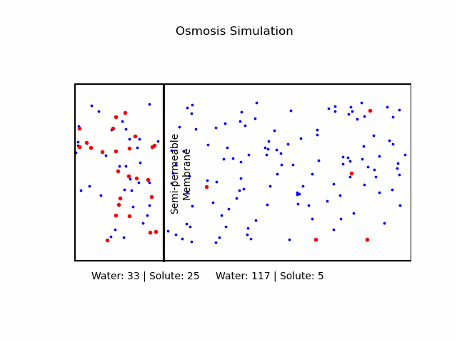
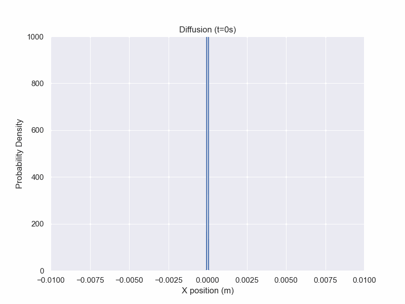

Diffusion
Introduction
Since such a large part of biology takes place in some sort of solution, diffusion is an essential process and being able to properly model it can be crucial.
In this section, diffusion models will be presented with increasing complexity, starting with special cases of following equations.
This chapter will build off of the stochastic processes chapter before it, especially the concept of Brownian motion.
Some stochastic calculus will be used which is not a listed prerequesite.
Osmosis
Introduction
At its core, osmosis is a manifestation of the second law of thermodynamics, which dictates that systems tend to move toward a state of maximum entropy.
In the context of osmosis, this translates to the movement of water molecules from regions of lower solute concentration to regions of higher solute concentration through a semi-permeable membrane.
Solvent and Solute
It's important to note that osmosis refers explicitly to the movement of the
solvent (in our case, water), not the solute.
Osmotic Pressure
Osmotic pressure, a key parameter in osmosis, is a direct consequence of thermodynamics. It arises from the desire of the system to reach equilibrium. As water molecules move into the solute-rich side of a semi-permeable membrane, they exert a pressure to counteract the flow and maintain equilibrium. This pressure is directly proportional to the concentration of solute particles and can be mathematically described by an equation similar to the ideal gas law:
$$\Pi = icRT$$
where \(\Pi\) is the osmotic pressure, i is the van't Hoff index, c is the molar concentration of solute, R is the ideal gas constant, and T is the absolute temperature.
Cell membrane
The cell membrane, also referred to as the plasma membrane, surrounds every living cell, acting as a barrier and controlling substance movement in and out of the cell. Composed primarily of phospholipids and proteins, it's selectively permeable, meaning only specific molecules can pass through it. This selectivity ensures that essential molecules like glucose can enter cells while waste products can exit and potentially harmful substances are kept out.
Tonicity
We categorize a solution based on the relative osmolarities of the cell and the solution.
- Isotonic Solution: If the concentration of solute is the same inside and outside the cell, there will be no net movement of water. Cells in such environments maintain their shape and function.
-
Hypertonic Solution: A higher concentration of solute outside the cell causes water to move out, leading to cell shrinkage or 'crenation' in animal cells. In plant cells, it may result in 'plasmolysis' where the cell membrane pulls away from the cell wall.
-
Hypotonic Solution: A lower concentration of solute outside the cell causes water to move in, potentially causing the cell to burst or 'lyse'. In plant cells, this can lead to 'turgor pressure' which keeps them rigid.

Python code:
import matplotlib.pyplot as plt
import numpy as np
import matplotlib.animation as animation
def draw_container(ax, x, y, left_x,right_x,offset, label_blue, label_red):
ax.plot([left_x, left_x, right_x, right_x, left_x], [y, y+5, y+5, y, y], 'k-')
ax.text(left_x+offset, y-0.5,
f'Water: {label_blue} | Solute: {label_red}', ha='center')
def draw_solute(ax, x, y,left_x,right_x, n_points, color,size=3):
x_points = np.random.uniform(left_x, right_x, n_points)
y_points = np.random.uniform(y+0.5, y+4.5, n_points)
ax.scatter(x_points, y_points, c=color, s=size)
def update(frame, membrane,
left_particles_blue, right_particles_blue,
left_particles_red, right_particles_red):
global ax
ax.clear()
ax.axis('equal')
ax.set_xlim(0, 10)
ax.set_ylim(0, 6)
ax.axis('off')
ax.set_title("Osmosis Simulation")
# Move membrane
membrane_position = 3 + 0.05 * frame
ax.plot([membrane_position, membrane_position], [0.5, 5.5], 'k-', linewidth=2)
# Recalculate number of particles for blue solute
total_particles_blue = left_particles_blue + right_particles_blue
left_area_blue = membrane_position - 1
right_area_blue = 10 - membrane_position
total_area_blue = left_area_blue + right_area_blue
new_left_particles_blue = int(total_particles_blue * (left_area_blue / total_area_blue))
new_right_particles_blue = total_particles_blue - new_left_particles_blue
# Draw everything
draw_container(ax, 1, 0.5,0.5,membrane_position,2,
new_left_particles_blue, left_particles_red)
draw_container(ax, 5, 0.5, membrane_position,10,3,
new_right_particles_blue, right_particles_red)
draw_solute(ax, 1, 0.5,0.5,membrane_position,
new_left_particles_blue, 'blue')
draw_solute(ax, 1, 0.5,0.5,membrane_position,
left_particles_red, 'red',size=9)
draw_solute(ax, 5, 0.5,membrane_position,10,
new_right_particles_blue, 'blue')
draw_solute(ax, 5, 0.5,membrane_position,10,
right_particles_red, 'red',size=9)
left_particles_blue, right_particles_blue = new_left_particles_blue, new_right_particles_blue
ax.text(membrane_position+0.5,
3, 'Semi-permeable\nMembrane',
ha='center', va='center', rotation=90)
return ax,
# Initial setup
fig, ax = plt.subplots()
ax.set_title("Osmosis Simulation")
# Initial concentration of blue particles on the left
left_particles_blue = 50
# Initial concentration of blue particles on the right
right_particles_blue = 100
# Initial concentration of red particles on the left (remains constant)
left_particles_red = 25
# Initial concentration of red particles on the right (remains constant)
right_particles_red = 5
membrane = 4 # Initial membrane position
ani = animation.FuncAnimation(fig,
update, frames=range(60),interval=10,
fargs=(membrane, left_particles_blue,
right_particles_blue, left_particles_red, right_particles_red),
blit=True)
ani.save('OsmosisSimulation.gif', fps=30,
#extra_args=['-vcodec', 'libx264']
)
Fick's Laws
Fick's First Law
Fick's first law of diffusion relates the flux of molecules diffusing to the spacial gradient.
$$\mathbf{J}=-D \nabla \phi$$
where \(\mathbf{J}\) is the flux vector, D is the diffusion coefficient, phi is the concentration.
Fick's first law is a special case of a more general principle called the
Continuity Equation
Continuity Equation
While not one of Fick's laws, the continuity equation is related. It states
$$\frac{\partial \phi}{dt}+\nabla J=R$$
where phi is the concentration, J is the flux, and R is the "source."
When dealing with systems where the total amount of the specie is constant, we can set R to be 0.
Combining the continuity equation with Fick's first law's definition for the flux, we get Fick's second law.
In later equations, we will add additional forces to the flux beyond the simple concentration gradient.
Fick's Second Law
While Fick's first law relates the flux to the concentration gradient,
Fick's second law relates the partial derivative with respect to time with the second partial with respect to space.
$$\frac{\partial \phi}{\partial t}=D\nabla^2\phi$$
Where \(\nabla^2\) is the Laplacian operator.
The solution is given by
$$\phi(x,t)=\frac{1}{\sqrt{4\pi Dt}}e^{-\frac{x^2}{4Dt}}$$
which is a Gaussian distribution whose variance is proportional to time elapsed.
Fick's Second Law Animation

Python code:
x_array = np.linspace(-0.1,0.1,5000)
fig, ax = plt.subplots(figsize=(8,6))
line, = ax.plot([])
ax.set_xlim(-.01,.01)
ax.set_ylim(0,1000)
D = 1.0e-8
def phi(x,t):
if type(x) == np.array or type(x) == list:
return np.array([phi(i,t) for i in x])
if (t==0):
return phi(x,t=0.01)
return 1/np.sqrt(4*np.pi*D*t)*np.exp(-x**2/(4*D*t))
def animate(frame_num):
line.set_data((x_array,phi(x_array,t=frame_num)))
plt.title(f"Diffusion (t={frame_num}s)")
return line
plt.ylabel("Probability Density")
plt.xlabel("X position (m)")
anim = FuncAnimation(fig, animate,
frames=100, interval=10)
anim.save('Diffusion.gif')
plt.show()
More Advanced Models
Diffusion Equation
But what if the diffusivity is not homogeneous? What if the diffusivity can be affected by the local concentration? For this, we need a more complex equation.
Let \(\phi(r,t)\) be the density of a specie at coordinate r and time t.
Let \(D(\phi,r)\) be the a coefficient that describes how captures how diffusivity changes with respect to density and position.
The diffusion equation is gven by:
$$\frac{\partial \phi(r,t)}{\partial t}=\nabla \cdot [D(\phi,r)\nabla \phi(r,t)]$$
Note that this simplifies to Fick's second law when D is constant.
Convection-Diffusion Equation
We can further build upon the Diffusion Equation by adding a drift term as well as sources or sinks for the specie. This new equation will have the form
$$\frac{\partial \phi(r,t)}{\partial t}=\nabla\dot [D(\phi,r)\nabla \phi(r,t)-v\phi(r,t)]+R$$
where v is the velocity field and R is the source or sink rate if the total amount of the specie is not constant over time.
This is an extension of the continuity equation, where we've added the flow term to the flux.
Fokker-Planck Equation
An equivalent description to the Convection-Diffusion equation posed as an SDE is the Fokker-Planck Equation.
The probability density of a particle under drift conditions connected to a stochastic differential equation (SDE) that describes its dynamics.
Since "Brownian motion" has its meaning in biology terminology as well, we will switch to W instead of B to describe the random process phenomenon to avoid confusion.
Let us describe the the location of a particle by
$$dX_t=\mu(X_t,t)dt+\sigma(X_t,t)dW_t$$
where \(X_t\) is the location of the particle at time t, \(\mu(X_t,t)\) is the drift felt as a function of time and space, \(\sigma(X_t,t)\) is the noise coefficient for standard Wiener process.
We can describe the evolution of the probability distribution for the location of the particle through solving the Fokker-Planck Equation:
$$\frac{\partial}{\partial t}p(x,t)=-\frac{\partial}{\partial x}[\mu(x,t)p(x,t)]+\frac{\partial^2}{\partial x^2}[D(x,t)p(x,t)]$$
where \(D(X_t,t)=\frac{1}{2}\sigma^2\).
In stochastic calculus, this is referred to as the Kolmogorov Forward Equation. There is a corresponding backward equation which deals with the likelihood of ending up at a particular state.
This equation does not allow for interactions between particles.
This becomes easier when D(x,t) is a constant, which can often be an appropriate assumption.
If there is no drift and D is constant, then we get the dynamics
$$dX_t=\sqrt{2D}dW_t$$
which is just a stochastic differential equation for particle undergoing Brownian motion (scaled by a constant).
By plugging the dynamics into the Fokker-Planck equation, we get a familiar form
$$\frac{\partial}{\partial t}\phi(x,t)=D\frac{\partial^2}{\partial x^2}\phi(x,t)$$
which is Fick's second law.
Nernst-Planck Equation
In the Convection-Diffusion equation, we introduced a force field that acted as drift then used the continuity equation. We can do a similar thing and incorporate electric fields:
$$\frac{\partial \phi(r,t)}{\partial t}=\nabla\dot [D(\phi,r)\nabla \phi(r,t)-v\phi(r,t)-\frac{Dze}{k_BT}\phi(r,t)E]$$
This can be alternatively written in terms of electric and magnetic potentials as
$$\frac{\partial \phi(r,t)}{\partial t}=\nabla\dot [D(\phi,r)\nabla \phi(r,t)-v\phi(r,t)+\frac{Dze}{k_BT}\phi(r,t)(\nabla V(\phi,r)+\frac{\partial A}{\partial t})]$$
where V is the electric potential and A is the magnetic vector potential.
The magnetic field (B) and the electric field (E) are related to the potential as follows:
$$B=\nabla \times A$$
$$E=-\nabla V - \frac{\partial A}{\partial t}$$
Numerical Methods - Finite Difference
A common technique to use when dealing with PDEs is the finite difference method.
These attempt to discretize the space we're working on and get approximations for the steps. However, caution must be used in order to ensure the discretization is good. Otherwise, we can run into compounding errors.
There are 3 main flavors to finite differences:
- Explicit Method
- Implicit Method
- Crank-Nicolson
These involves slightly different ways of approximating the partial derivative by sampling surrounding points.
In the Implicit and Crank-Nicolson methods, we end up having to solve a system of equations, but given we are already using a computer to perform this, we can also just have the computer solve the system of equations.
The explicit method is computationally the simplest and does not require solving a system of equations, but it is also the most prone to compounding errors.
Monte Carlo Estimation
While an analytic solution is nice, doing large scale simulations is another option.
We can generate a sample path by knowing the dynamics and having the computer draw from a normal distribution.
For path-dependent processes such as when the drift and/or diffusivity is a function of position, we can take many small time steps.
Our distribution would be a normalized histogram of our results.
Exploring the Diffusivity
So what is the diffusivity?
The Einstein relation states that
$$D=\mu k_B T$$
where \(\mu\) is the "mobility." The issue of mobility kicks the can of difficulty down the road and can be itself a task to model.
However, in a simple case, for a small uncharged particle moving relatively "smoothly" through a medium, we can use the Stokes-Einstein equation:
$$D=\frac{k_BT}{6\pi \nu r}$$
where \(\nu\) is the viscosity of the solution and r is the radius of the particle.
We observe an expected relationship that the diffusivity increases with higher temperature. We also gain the ability to relate an easily measurable macroscopic quantity, viscosity, to a more microscopic quantity, diffusivity.